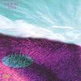

Celtic Lyrics Corner > Artists & Groups > Old Blind Dogs > Five > The Battle Of Harlaw
|  | The Battle Of Harlaw |
| Credits : | Traditional; arranged by Old Blind Dogs |
| Appears On : | Five ; Play Live |
| Language : | Scots-English |
Lyrics :
As I cam' in by Dunideer and doon by Nether Ha'
There were fifty thoosand' heilan' men a-marchin' tae Harlaw
Chorus (after each verse)
:
Wi' a diddy aye o' an' a fal an' doe
And a diddy aye o' aye ay
As I gaed on an' farther on and doon an' by Balquhain
Oh it's there I saw Sir James the Rose and wi' him John the Graeme
"It's cam' ye fae the Heilan's man, cam' ye a' the wey?
Saw ye MacDonald and his men as they cam' in fae Skye?"
"It's I was near and near eneuch that I their numbers saw
There was fifty thoosan' heilan' men a-marchin' tae Harlaw"
"Gin that be true," says James the Rose, "We'll no cam' muckle speed
We'll cry upon wir merry men and turn wir horse's heid"
"Oh na, o' na," says John the Graeme, "This thing will nivver be
The gallant Graemes wis nivver beat, we'll try fit we can dae"
Well, as I gaed on an' further on an' doon an' by Harlaw
There fell fu' close on ilka side sic straiks ye nivver saw
There fell fu' close on ilka side sic straiks ye nivver saw
An' ilka sword gaed clash for clash at the Battle of Harlaw
The Heilan' men wi' their lang swords, they laid on us fu' sair
And they drave back wir merry men three acres breadth and mair
An' Forbes tae his brither did say, "Noo brither, can't ye see
They've beaten us back on ilka side and we'll be forced tae flee"
"Oh na, na, my brither bold, this thing will nivver be
Ye'll tak yer guid sword in yer haun', ye'll gang in wi' me"
Well, it's back tae back the brithers bold gaed in amangst the thrang
And they drave back the heilan' men wi' swords baith sharp and lang
An' the firstan stroke that Forbes struck, he gart MacDonald reel
An' the neistan straik that Forbes struck, the brave MacDonald fell
An siccan a ptlairchie o' the likes ye nivver saw
As wis amangst the Heilan' men fan they saw MacDonald fa'
Some rade, some ran and some did gang, they were o' sma' record
For Forbes and his merry men, they slew them on the road
O' fifty thoosan' Heilan' men, but fifty-three gaed hame
And oot o' a' the Lawlan' men, fifty marched wi' Graeme
Gin onybody spier at ye for them that marched awa'
Ye can tell them plain and very plain they're sleepin' at Harlaw